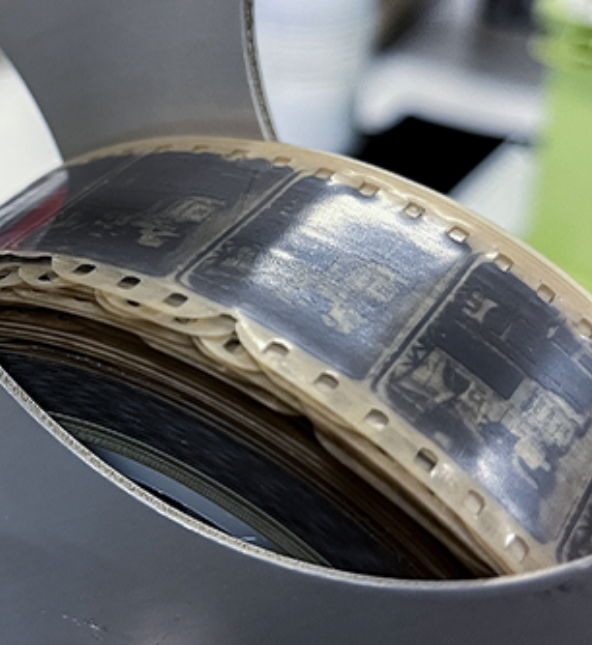

Physical wear and tear of media can be indexical data.
When archivists at the Library of Congress recently acquired a long-lost Méliès film, one of the earliest depictions of artificial intelligence on screen (1897), they also discovered it was a copy of a copy of a copy by dating it the way you age a tree: each time a film is duplicated, it leaves an imprint of the previous roll, a series of shadows you can read from the sprocket hole edge inward. The history of that roll of film was embedded in its physical surface.
Right Photo by Shawn Miller. National Audio-Visual Conservation Center.